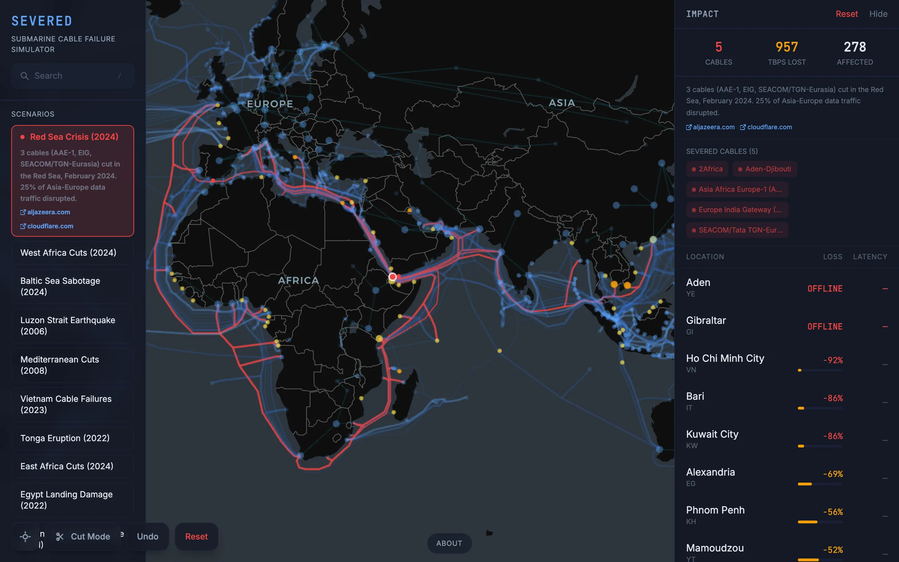

The usual figure is that around 95 percent of intercontinental traffic goes over submarine cables, some of them thinner than a garden hose. When one gets cut by an anchor or an earthquake or a missile, rerouting happens fast enough that nobody notices. When several fail in the same chokepoint, countries drop off. I wanted to make that infrastructure visible and let people break it themselves. You click a cable to sever it, drop a point cut with a radius, or load one of ten reconstructed historical failures, and the app tells you which metros lost bandwidth, how much, through which cables the traffic moved, and who is now isolated. It all runs in the browser.
The data
Most of the work in this project is data, and I want to be specific about what's real and what's guessed. Cable routes and landing stations come from TeleGeography's Submarine Cable Map: 594 operational cables, each split into segments between the metros it lands in, 1,493 segments in total. Vertices are metro areas rather than countries, because a country like the United States has dozens of independent landing points and treating it as one node would hide exactly the failures I care about. There are 930 metros, and 92 of them are flagged as hubs.
Submarine cables alone give a wrong picture, because Frankfurt to Paris goes overland. So I hand-sourced 151 terrestrial backbone edges between major metros on the same landmass. That brings the graph to 1,644 edges.
Capacity is the weak spot. Every edge carries a capacity in terabits per second and a tag saying how much to trust it. Of the 594 cables, 82 have a design capacity I could verify from filings or announcements, 28 are estimated from fiber-pair counts, and 484 are approximated from nothing but their ready-for-service year: 4 Tbps before 2005, 15 Tbps to 2012, 50 to 2018, 200 to 2022, and 280 after that, medians taken from cables whose numbers are public. The terrestrial edges are mostly estimates too, 11 verified out of 151. So four out of five cable capacities in this model are a lookup on a year. The UI shows the tag so nobody mistakes a guess for a measurement.
What the engine computes
The question is, for each metro, how much bandwidth can it reach across the rest of the world, and how much of that survives a cut. The exact answer is an all-pairs max-flow, which I'm not doing in a browser. What ships is a heuristic. From each of the 92 hubs I run plain Dijkstra weighted by kilometres, reconstruct the path to every metro, and read off the smallest capacity along it. Each metro's score is the sum over hubs of that bottleneck, weighted by the capacity of the edge that enters the metro divided by the metro's total incident capacity, so a city with one fat cable and three thin ones doesn't count all four equally. Hubs themselves score the sum of their direct capacities.
That is the bottleneck of the shortest path, not the widest path. A metro whose fattest route is a few hundred kilometres longer than its shortest gets undervalued. Swapping the relaxation to max of min would fix it, and I haven't done that yet, partly because the same kilometre-shortest run gives me the latency estimate at 5 ms per thousand kilometres. The priority queue is an array re-sorted on every pop, which is fine at 930 nodes. Path diversity in the panel is simply how many distinct cables touch the metro.
A cut removes edges and reruns the whole thing, then diffs against the baseline: loss ratio per metro, plus the edges on each metro's new shortest paths as the "rerouted through" list. A chokepoint scenario removes every segment with an endpoint or midpoint inside one of nine polygons. A point cut removes segments within a radius, 100 km by default, using degrees times 111 km with no correction for latitude, so a point cut near the poles is wider than it says. It runs in a Web Worker so the globe keeps spinning.
Checking it against real cuts
All ten scenarios are real events, and 41 tests check that the model moves the right way on each. The right way, not the right amount. The 2008 Alexandria cuts took roughly 70 percent of Egypt's bandwidth; the test asserts the model shows more than 10. The 2022 Tonga eruption cut both of the island's cables, and the test asserts Nuku'alofa ends up with no international path, which is what happened. The Red Sea scenario shows heavy loss across the Middle East and much less in East Africa, which has routes around the Cape. The magnitudes are not to be trusted, since real rerouting depends on peering and traffic engineering the model knows nothing about, and since most of the capacities are year lookups.
What I found clicking around
The Luzon Strait between Taiwan and the Philippines is the cut that surprised me. A handful of cables through that corridor carry most of the traffic between East Asia and everywhere else, and cutting them hurts Japan, South Korea, and Taiwan at once. Western Europe I could not meaningfully degrade. Cables land in the UK, France, Spain, and Portugal from so many directions that it takes dozens of simultaneous cuts to move the numbers. Small island nations are the opposite: Tonga, Tuvalu, and several Pacific islands hang on a single cable, and one anchor drag takes them dark. West Africa sits between, with growing cable diversity but thin terrestrial alternatives, so a cluster of failures at one chokepoint cascades.
The map is Deck.gl over MapLibre with a dark basemap that needs no API key. Cable width scales with capacity, cut cables turn red, and metros go from green through yellow and orange to red as their loss grows.